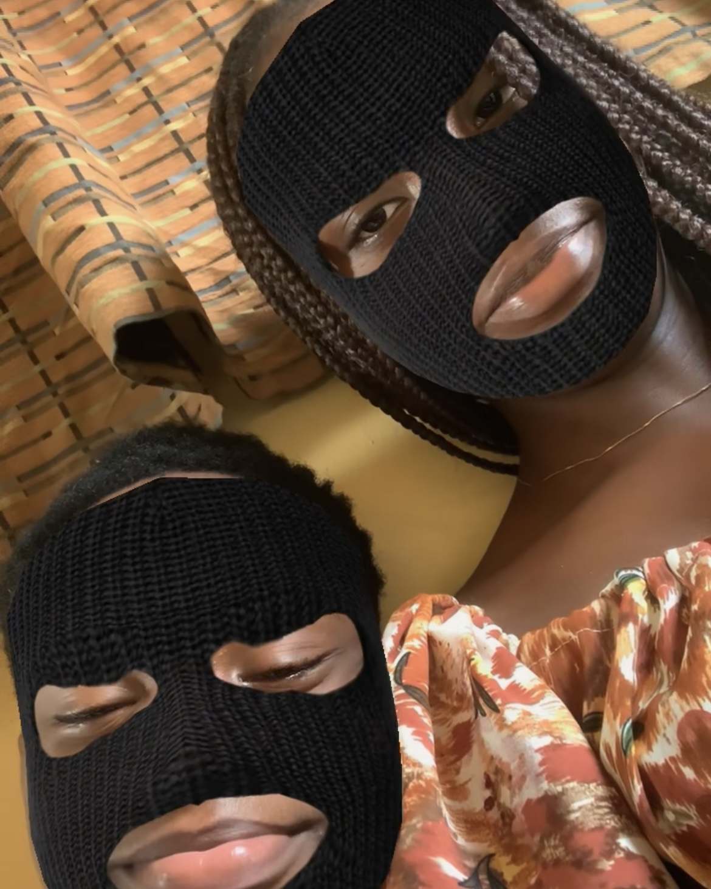
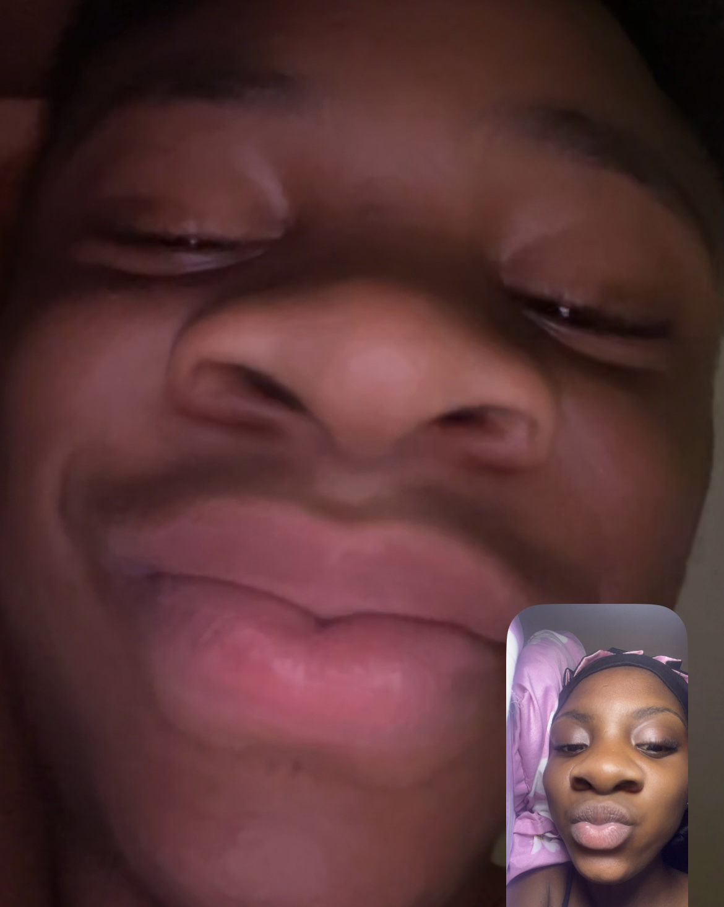
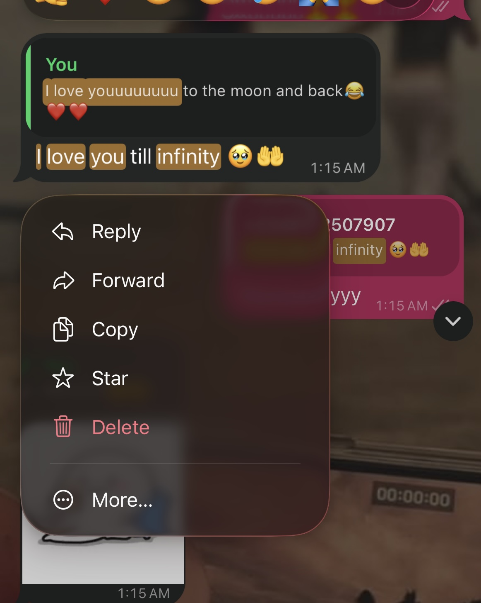
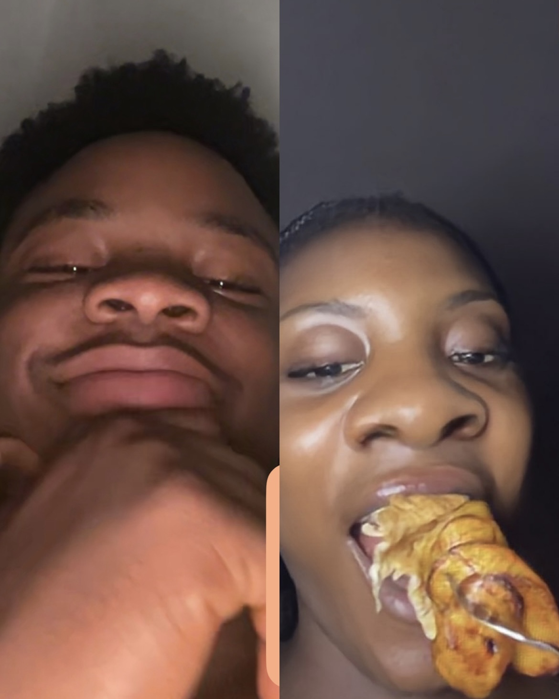
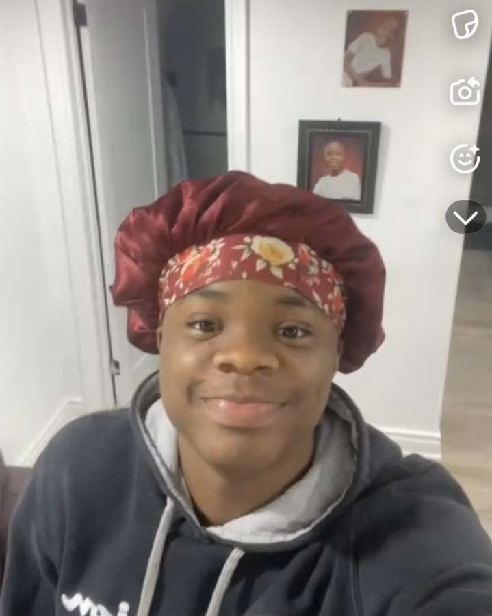
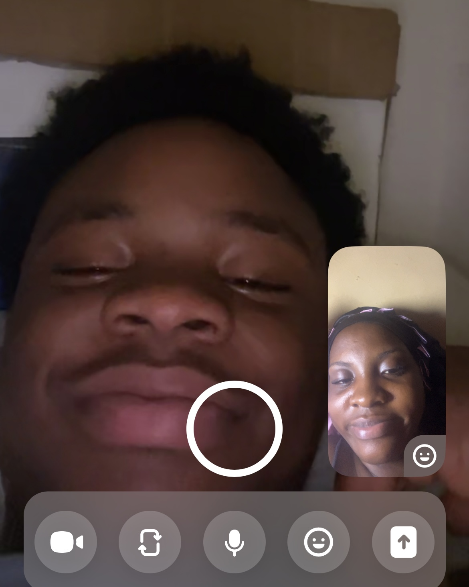

For the person who slowly became one of the most important parts of my life…
Two years, so many memories, and a love that has grown in ways I never expected.
I made this little piece of us for you.
TWO YEARS OF US ♡
September 2024 — September 2026
Two years ago, I didn't know that meeting you would lead me here— sitting down two years later, trying to put into words what you mean to me.
We've had beautiful moments, difficult moments, silly moments, and moments that I'll probably remember for a very long time.
And somehow, all of those moments became our story.
So this is a little piece of that story. Ours. 🤍
THEN CAME THE DISTANCE…
After being together for exactly a year, you had to leave to join your parents.
And honestly, I remember how scared I was.
Suddenly, something that had always felt so normal—being able to see you, being close to you, knowing you were somewhere around me—was about to change.
I remember wondering if we were really going to be able to do it.
Could we really make this work?
Then came the time difference, the missed moments, the nights when all I wanted was a hug from you but the only thing we could do was FaceTime.
The beginning wasn't easy. We had our hard days. We had moments where the distance affected us in ways neither of us expected.
There were times when we needed each other physically, but all we could give each other was a screen.
But we kept trying.
We kept calling.
We kept talking.
We kept choosing to make it work.
And now, two years into us, we've spent one whole year loving each other from a distance.
And somehow, something that once felt so scary has slowly become a normal part of our relationship.
But I think the most beautiful thing about the distance is that it showed us something.
We really wanted each other.
Because we could have let the distance be the reason we ended things. We could have decided it would be too hard and walked away before it even began.
But instead, we looked at the distance and said,
“We can do this.”
And here we are.
Still doing it. 🤍
Maybe distance hasn't always been kind to us, but it has shown us that loving each other isn't only about being in the same place.
Sometimes it's choosing each other from miles away.
And we've been doing exactly that for a year now.
One year of long distance. One year of choosing us. ♡
THE LITTLE THINGS I LOVE ABOUT YOU ♡
There are so many things I love about you, but these are some of the little things that always make me think, “Yep… that's my person.” 🥹
The way you care about me…
I really love how you always check up on me and ask if I'm okay.
And somehow, whenever I'm not okay, you're not okay either. 🥺
You don't just ask because you're supposed to—you genuinely care about how I'm feeling, and I feel that.
The way you care for me is something I don't ever want to take for granted.
I really, really love that about you. 🤍
Okay, let's talk about your voiceeeee. 😭❤️
Somehow, no matter how bad my day has been, I always seem to have a good night because I get to hear your voice.
There's just something about hearing you that calms me down.
Your voice has become one of those little things that can instantly make me feel better.
And honestly…
that voice does things to me. 🤭
It literally makes my chest flutter.
I don't think you even realise what hearing you does to me. 🥹❤️
Your patience with me…
I genuinely don't think I've met a man as patient as you. 😂😭
There have been so many times I've done things that pissed you off, times I've been difficult, times I've wanted to give up on us over the smallest things—not always because I don't care, but sometimes because I can be very petty. 😭😂
And yes, some of my reasons were valid too. 😂
But through all of that, you still loved me.
You didn't give up on us.
You kept choosing me, loving me, and believing in us even when I was ready to throw everything away.
And I'll always appreciate you for that. 🤍
Omyyyyy, I have the funniest man on earth. 😭😂
I genuinely don't think a call with you can pass without me laughing.
You have this way of making me laugh so much, even when I don't feel like laughing.
And I love that about you.
You brighten my days in a way you probably don't even realise.
Sometimes it's literally just us being on a call, talking nonsense and laughing like two idiots. 😂❤️
I love how funny you are, babe.
You and your little acts of love… 🥹
Sometimes the things you do for me are honestly so difficult to explain.
You go out of your way to please me, make me happy, or make something easier for me, and I notice it.
I might not always say it perfectly, but I appreciate your efforts so much.
I appreciate the things you do, the thought behind them, and the fact that you actually make an effort.
Thank you for loving me intentionally, babe.
It means more to me than I probably say. 🤍
And then there's this…
The distance.
One thing I love so much about you is that the distance didn't make you love me less.
If anything, I feel like your love for me has continued to grow.
You still make an effort. You still care. You still make me feel wanted. You still make us feel important.
I love how intentional you are about me and about our relationship, even when we're miles apart.
Because loving someone from far away isn't always easy, but you continue to show me that you want to be here.
And I love you for that. So much. 🤍
These are only a few of the things I love about you…
I could probably keep going, but then we'd be here until our next anniversary. 😂
And I hope you never forget how loved you are by me. ♡
OUR LITTLE MEMORIES ♡
Two years is a lot of time…
And somehow, it's also a collection of tiny moments I wish I could keep forever.
Some are big. Some are completely random. Some probably wouldn't mean much to anyone else.
But they're ours. 🤍

The beginning
Before we knew where this was going…

Us being us
Just two people who somehow always find something to laugh about. 😂

The little things
It's always the little things that stay with me.

Miles apart
Different places. Same us.

This one…
I don't even know how to explain why I love this one. I just do.

One of my favourites 🤍
And this one will always have a special place in my heart.
And these are only a few…
There are so many moments I didn't put here—conversations, random jokes, late-night calls, little arguments, apologies, laughter, and all the ordinary days that somehow became special because they were with you.
I wouldn't trade our story for anything. ♡
WHAT I STILL WANT WITH YOU ♡
Two years have already given me so many memories with you…
but there's still so much I want to experience with you.
So many places we haven't been, so many moments we haven't had, and so many versions of us we haven't met yet.
And honestly, I can't wait. 🤍
✈️ Take a trip together
I want to know what it's like to actually pack our bags, travel somewhere together, and make memories without a screen between us.
🎡 Go on fun dates together
I want us to go on actual fun dates together. The kind where we dress up, take too many pictures, try new things, laugh until our stomachs hurt, and probably make fun of each other the whole time. 😂
I want the cute dates, the spontaneous ones, the random “let's just go somewhere” days, and all the little adventures we'll look back on later and laugh about.
I just want to experience life with you—not through a screen, but right beside you. 🤍
🏡 A normal day together
Not even anything extravagant. I want the boring days too. Waking up around you, doing absolutely nothing, getting food, watching movies, and just existing together.
📸 More memories
I want an unreasonable amount of pictures of us. The cute ones, the ugly ones, the random ones—we need evidence of all of it. 😂
🤍 Keep growing
I want to see who we become individually and together. I want us to keep learning each other and growing into better versions of ourselves.
🥂 More anniversaries
Two years feels special, but I hope one day we look back at this website and laugh because we have so many more anniversaries to count.
There are so many things I still want to do with you… but more than anything, I just want more time with you. 🤍
ONE LAST THING… ♡
Omg… I’m actually starting to tear up writing this. 🥹
I’m genuinely so surprised at how far we've come. It honestly doesn't even feel like we've spent two years together alreadyyyyy.
Two whole years.
And somehow, we're still here. Still talking, still laughing, still annoying each other 😂, still loving each other.
I think that says something beautiful about us.
Babe, I need you to know something…
I love you so much more than I can sometimes explain.
I love you.
I love you.
I LOVE YOUUUUU. 😭❤️
With all my heart.
You're someone I trust deeply. You're someone I can tell everything to without having to hold back, and that means so much to me.
I'm so grateful to God that I met you. Out of all the people in this world, somehow our paths crossed, and somehow you became this incredibly important part of my life.
We've had our moments. We've had our difficult days. We've had the distance, the misunderstandings, the laughter, the tears, and everything in between.
But when I look at us now, all I can think is…
Look how far we've come. 🥹
Thank you for being you. Thank you for loving me. Thank you for choosing us, even when it hasn't always been easy.
I don't know exactly what the future holds, but I know I'm grateful that I got to experience these two years with you.
And if there's one thing I want you to remember from this entire little website, it's this:
You are so, so loved.
Happy anniversary, my baby. 🤍
I love you my forever. ♡
ONE MORE THING… ♡
If you ever wonder how much you mean to me…
MORE THAN THESE WORDS COULD EVER EXPLAIN. 🤍
I love you, Emmanuel.
Happy two years, my baby. ♡
2 YEARS DOWN… ♡
So many more memories to go. 🤍
— Love, Nifemi 🤍
HOW IT STARTED…
Funny how some of the best things in life start without us even knowing where they're going.
Before I even met you, I already had a little crush on you. 😂 Your cousin—who was already my friend—used to talk about you, so somehow I already knew of you before I actually knew you.
Then your parents travelled, and you came to stay with your cousin, who happened to live close to me. And since we all attended the same church, it was only a matter of time before we finally met.
And when I finally saw you for the first time… let's just say my little crush had a reason. 🤭❤️
We didn't suddenly become a couple. We actually took our time. We started talking, became friends, and slowly became closer.
Somewhere between all the conversations, the jokes, and spending more time together, I started realizing that maybe I wanted more than just friendship.
But of course, we had to make things complicated first. 😂
There was a little misunderstanding, and honestly, neither of us was completely sure about what we felt. We both thought the other person might want someone else.
Meanwhile… we wanted each other. 😭
Eventually, we figured that out, and you asked me to be your girlfriend.
And just like that, our little story officially began.
And look at us now… two years later. 🤍
Maybe we were a little confused at the beginning, but somehow, we found our way to each other.